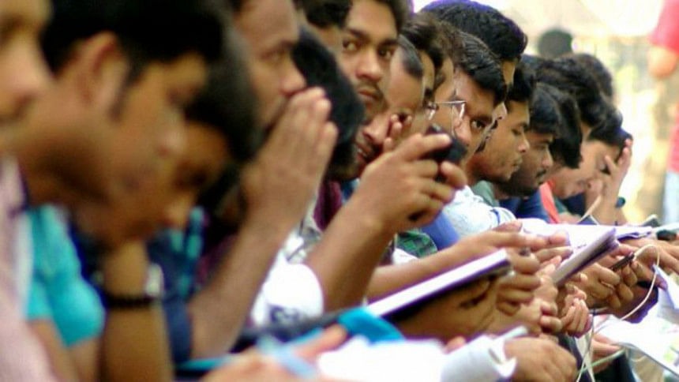

As-salamu alaykum
and
Welcome to our web_page, here you can have more details with pictures
about the topics that are bashed on
DHAKA DIVISION
GROUP 1
#Bangladesh Studies #Poster Presentation #CSE
Introduction to Dhaka Division
Dhaka Division, at Bangladesh's heart, is a densely populated and dynamic region. [cite: 2, 3, 4, 5] It encompasses 13 districts, with Dhaka city as its vibrant, historic capital. [cite: 2, 3, 4, 5] This central hub pulsates with a rich past, a bustling present economy driven by garments and emerging tech, and a complex interplay of culture and environmental challenges. [cite: 2, 3, 4, 5] It's a land of immense human energy and significant national importance. [cite: 2, 3, 4, 5]
The origins of the name Dhaka are uncertain. It may derive from the dhak tree, which was once common in the area, or from Dhakeshwari, the 'patron goddess' of the region.[6][7] Another popular theory states that Dhaka refers to a membranophone instrument, dhak which was played by order of Subahdar Islam Khan I during the inauguration of the Bengal capital in 1610.[8] Some references also say it was derived from a Prakrit dialect called Dhaka Bhasa; or Dhakka, used in the Rajtarangini for a watch station; or it is the same as Davaka, mentioned in the Allahabad pillar inscription of Samudragupta as an eastern frontier kingdom.[9] According to Rajatarangini written by a Kashmiri Brahman, Kalhana,[10] the region was originally known as Dhakka. The word Dhakka means watchtower. Bikrampur and Sonargaon—the earlier strongholds of Bengal rulers were situated nearby. So Dhaka was most likely used as the watchtower for the fortification purpose.[10]
Geographical Location and Area
Centrally situated in Bangladesh, Dhaka Division spans roughly between 23°30′N and 24°50'N latitude, and 90°00'E and 90°50'E longitude. [cite: 6, 7] Covering about 20,594 sq. km.

Number of Districts and Administrative Structure
Dhaka Division comprises 13 districts, each district is further divided into Upazilas (sub-districts), then Union Parishads (rural councils) or Wards (urban areas), and finally into villages or mahallas. [cite: 7, 8] The Dhaka Metropolitan Area has a distinct administrative structure with several thanas (police stations) and wards under the Dhaka North and Dhaka South City Corporations. Deputy commissioner A Deputy Commissioner (DC), popularly abbreviated to 'DC,' serves as the executive head of the district. Individuals appointed to the role are selected by the government from the Deputy Secretary BCS Administration Cadre. District councils Main article: District Councils of Bangladesh A district council (or zila parishad) is a local government body at the district level.[4] The Bengali word parishad means council and zila parishad translates to district council. The functions of a district council include the construction and maintenance of roads and bridges. They are also responsible for building hospitals, dispensaries, schools, and other educational institutions. In addition, district councils oversee health facilities and sanitation projects, as well as the installation of tube wells for drinking water. They also manage rest houses and coordinate activities among the Union Parishads within the district.
click here for in Specific detailsPopulation and Density
Dhaka Division is the most populous of the eight administrative divisions of Bangladesh. According to recent estimates, the population of Dhaka Division is well over 40 million, making it one of the most densely populated regions in the world. The Dhaka Metropolitan Area, which includes Dhaka city and its surrounding urban areas, is the primary contributor to this high population density. Dhaka city itself is one of the fastest-growing megacities globally, with millions of people living within its boundaries. This rapid urbanization and migration from rural areas contribute to the extremely high population density. The high population density in Dhaka Division presents both significant opportunities and challenges. Opportunities: A large population provides a vast labor pool, a significant consumer market, and potential for economic growth and innovation. Challenges: The density also creates immense pressure on infrastructure, including housing, transportation, sanitation, and public services. It also contributes to environmental problems like pollution and congestion. To make this information even more robust, you would ideally include: Specific population figures: Instead of "well over 40 million," provide the most recent official population estimate. You can find this data from sources like the Bangladesh Bureau of Statistics (BBS) or the World Bank. Population density figures: Provide the population density in persons per square kilometer for Dhaka Division and, if possible, for the Dhaka Metropolitan Area. This will give a clearer picture of how crowded the region is. Comparison to other areas: You could add a comparison of Dhaka Division's population density to that of other major cities or regions globally to emphasize how high it is. Trends: Briefly mention the population growth rate and urbanization trends to explain why the density is so high. Where to find reliable data: Bangladesh Bureau of Statistics (BBS): This is the primary source for demographic and economic data within Bangladesh. World Bank: The World Bank provides data and statistics on various countries, including Bangladesh. United Nations Population Division: The UN provides global population data and projections.
 click here to have live information
click here to have live information
History and Heritage
Ancient and Medieval History
Dhaka boasts a history stretching back centuries, evolving through various Sultanates before its pivotal rise in 1608. [cite: 13] As Jahangirnagar, the 17th-century capital of Mughal Bengal under Islam Khan, it witnessed significant urban growth, booming trade, and a vibrant cultural scene. [cite: 13]
The earliest written mention of Dhaka occurs in a map in the book Décadas da Ásia (Decades of Asia) by Portuguese historian João de Barros. Dated 1550 CE, during the Sultanate period, it reads "Daca" in the present day region of Dhaka.[5] There is no definititive origin story of the name, but there are various theories: The name came following the establishment of Dhakeshwari temple built by Raja Ballal Sena in the 12th century and Dhakeswari is the name of Goddess Durga. Dhakeshwari may also mean Goddess of Dhaka; so the temple might have been named after the region.[citation needed] Dhak (a membranophone instrument) is used as part of the Durga Puja festival in this temple.[citation needed] The plant named Dhak (Butea monosperma) which was widely found in that area.[6] In the 4th century, the poet-laureate Harisena mentioned Davaka as an eastern frontier of the Gupta Empire, at Prayag Prashasti inscription on the Allahabad Pillar, as an eulogy for the Gupta Emperor Samudragupta.[7][5] Rajatarangini, written by a Kashmiri Brahman, Kalhana says the region was originally known as Dhakka. The word Dhakka means watchtower. Bikrampur and Sonargaon — the earlier strongholds of Bengal rulers were situated nearby. So Dhaka was likely used as the watchtower for the fortification purpose.[6] A dialect of Prakrit language is called Dhaka Bhasa.
.jpeg)
.jpeg)
Key Events During the British and Pakistani Periods

.jpeg)
During British rule (mid-18th to mid-20th century), Dhaka remained a key administrative and commercial hub, even as Calcutta became the British Indian capital. [cite: 14, 15, 16] A significant moment was the 1905 Partition of Bengal, briefly making Dhaka the capital of Eastern Bengal and Assam, igniting political unrest. [cite: 14, 15, 16] Later, as the capital of East Pakistan (1947-1971), Dhaka became central to the growing movement for Bengali rights and autonomy. [cite: 14, 15, 16]
visit web_site for more acccurate infoRole of Dhaka in the Liberation War
.jpeg)
.jpeg)
In 1971, Dhaka was the heart of the Bangladesh Liberation War. [cite: 17, 18, 19, 20] The brutal crackdown on March 25th ignited the armed struggle, and the nation's independence was declared from here. [cite: 17, 18, 19, 20] The war culminated with the Pakistani forces' surrender in Dhaka on December 16th, marking Bangladesh's birth. [cite: 17, 18, 19, 20] The city holds numerous memorials to this pivotal time.
.jpeg)
.jpeg)
Economy and Industries in Dhaka Division
Major Economic Sectors
Dhaka's economy is significantly driven by the ready-made garment (RMG) industry, a major exporter employing millions. [cite: 21] While increasingly urbanized, agriculture still contributes, especially in surrounding areas. [cite: 21] The Information Technology (IT) sector is a rapidly expanding area with growing software development and outsourcing. [cite: 21]
visit wikipediaDhaka Stock Exchange and Business Centres
Live infoThe Dhaka Stock Exchange (DSE) is the primary stock exchange of Bangladesh, located in the Motijheel commercial area. [cite: 21, 22] It plays a vital role in the country's financial markets. [cite: 21, 22] Motijheel and Dilkusha are traditional central business districts, housing major banks, financial institutions, and corporate headquarters. [cite: 21, 22] Newer business hubs are also emerging in areas like Gulshan, Banani, and Uttara, with a mix of commercial and residential developments. [cite: 21, 22]
Employment and Unemployment Rates
Dhaka Division has a large labour force engaged in various sectors. [cite: 22, 23, 24, 25] However, unemployment and underemployment remain significant challenges, particularly among the youth. [cite: 22, 23, 24, 25] The garment industry is a major employer, especially for women. [cite: 22, 23, 24, 25] The informal sector also employs a large segment of the population. [cite: 22, 23, 24, 25] You'll need to find recent statistics on employment and unemployment rates from reliable sources like the Bangladesh Bureau of Statistics (BBS). [cite: 22, 23, 24, 25, 26]
news link live chart of unemployment-rateEducation and Healthcare System in Dhaka Division
Universities and Major Educational Institutions
.jpeg)
.jpeg)
Dhaka is a major educational hub, home to some of the oldest and most prestigious universities in Bangladesh, including the University of Dhaka, Bangladesh University of Engineering and Technology (BUET), and Jahangirnagar University. [cite: 1, 2] Numerous private universities, medical colleges, and specialized educational institutions also operate within the division. [cite: 2]
Universities: Public Universities: University of Dhaka Bangladesh University of Engineering and Technology (BUET) Bangabandhu Sheikh Mujib Medical University Jagannath University Bangladesh University of Professionals Private Universities: Ahsanullah University of Science and Technology American International University-Bangladesh BRAC University North South University Daffodil International University Independent University, Bangladesh East West Medical College & Hospital Medical College for Women and Hospital
.jpeg)
.jpeg)

Government and Private Hospitals
Dhaka has a mix of government-run and private hospitals. [cite: 3] Major government hospitals include Dhaka Medical College Hospital (DMCH), Sir Salimullah Medical College Hospital, and specialized institutes. [cite: 4] The private healthcare sector has grown significantly, with numerous private hospitals and clinics offering a range of medical services. [cite: 5] Access to quality healthcare remains a challenge for many, particularly the urban poor and those in more rural parts of the division. [cite: 6]
.jpeg)
.jpeg)
Government (Public) Hospitals: These are funded and operated by the government. They are often located in regional areas and affiliated with medical colleges, providing specialty care. Examples include medical college hospitals, district hospitals, and maternal and child welfare centers. Private Hospitals: These are privately owned and operated, often financed by household out-of-pocket payments. The private sector has seen significant growth in both service delivery and education. There are concerns about the cost and quality of care in the private sector. Examples include Anwer Khan Modern Medical College, Ad-din Akij Medical College Hospital, and many others. Key Statistics (as of 2019): There were 255 public hospitals and 5,054 private hospitals and clinics. Public hospitals had 54,660 beds, while private ones had 91,537, totaling 143,394 beds. In 2023, the total number of hospitals in Bangladesh was 5,816. Healthcare Levels Primary Level: Upazila health complexes, union health & family welfare centers, and community clinics. Secondary Level: District hospitals, maternal and child welfare centers. Tertiary Level: Medical college hospitals, which are affiliated with medical colleges and provide specialty care. Registration: The Directorate General of Health Services (DGHS) registers both public and private hospitals and clinics.
.jpeg)
.jpeg)
Literacy Rate and Challenges
The literacy rate in Dhaka Division is generally higher than the national average, but disparities exist between urban and rural areas and between genders. [cite: 7] You'll want to find the latest literacy statistics. [cite: 8] Challenges in the education sector include ensuring quality education, reducing dropout rates, and addressing disparities in access to education. [cite: 8]
Main informationCulture and Heritage of Dhaka Division
Language and Literature
The primary language is Bengali (Bangla). [cite: 9, 10] The Dhaka dialect has its own nuances and variations. [cite: 10] Dhaka has been a center for Bengali literature for centuries, producing renowned poets, writers, and intellectuals. [cite: 11] The legacy continues with contemporary literary figures and publications.
Bengali Language and Literature: Dhaka is the largest Bengali-speaking city in the world, making Bengali the dominant language and a rich source for literature. The city has a vibrant literary scene with many writers and poets contributing to Bengali literature. Dhaka's cultural heritage, including the Bengali New Year parade, Jamdani sari, and rickshaw art, are recognized by UNESCO as intangible cultural heritage. English Language and Literature: English is also a significant language in Dhaka, with many institutions offering English language and literature programs. The University of Dhaka's Department of English is a prominent institution for English language and literature studies. Notre Dame University Bangladesh also offers a BA in English Language & Literature. Persian Language and Literature: Dhaka University has a Department of Persian Language and Literature, offering undergraduate and postgraduate programs. The department traces its origins to the Department of Persian and Urdu, established in 1921. The department has a seminar library and a research room named "Iran Studies Room". Other Languages: While Bengali and English are the primary languages, there are also other languages spoken in Dhaka, reflecting the diverse cultural background of the city. Institutions and Programs: Dhaka University: Offers BA and MA programs in English Language and Literature, as well as Persian Language and Literature. Notre Dame University Bangladesh: Offers a BA in English Language & Literature. Dhaka College: Offers an honors course in English under Dhaka University. Royal University of Dhaka (RUD): Offers a BA in English program. Dhaka International University (DIU): Offers a Department of English.
Festivals and Traditions
.jpeg)
.jpeg)
.jpeg)
.jpeg)
Dhaka, Bangladesh, celebrates a vibrant mix of cultural and religious festivals, including the Bengali New Year (Pohela Boishakh), the International Mother Language Day, Durga Puja, Eid, and Shakrain (kites festival), reflecting its diverse heritage and traditions. Here's a more detailed look at some of the key festivals and traditions in Dhaka: Religious Festivals: Eid-ul-Fitr and Eid-ul-Adha: These are the two major Islamic festivals celebrated with prayer, feasting, and visiting family and friends. Durga Puja: This is the biggest Hindu festival, celebrated with elaborate preparations, idol worship, and community gatherings, culminating in the immersion of the idols in rivers. Christmas: Christians in Dhaka celebrate Christmas with church services, decorations, and festive gatherings. Buddha Purnima: This is a significant Buddhist festival, celebrated with prayers, meditation, and community events. Cultural Festivals: Pohela Boishakh (Bengali New Year): This is a major cultural event, celebrated on April 14th, with traditional music, dance, and food, marking the start of the Bengali calendar and the harvest season. Ekushey Boi Mela (Ekushey Book Fair): This is a major literary event held annually in Dhaka, showcasing books and promoting a love for reading. International Mother Language Day (February 21st): This day commemorates the Bengali Language Movement, with people paying homage to the martyrs at the Shaheed Minar and organizing cultural events. Shakrain Festival: This kite flying festival is celebrated in old Dhaka, with people flying colorful kites, enjoying fireworks, and participating in kite-fighting competitions. Rabindra and Nazrul Jayanti: The birth anniversaries of Rabindranath Tagore and Kazi Nazrul Islam, celebrated with cultural performances, song sessions, and gatherings. Other Traditions: Weddings: Traditional Bengali weddings are elaborate affairs, with various rituals, ceremonies, and feasts. Baul Mela: Baul music and culture are an important part of Bangladesh's heritage, with Baul melas (festivals) showcasing these traditions. Independence Day and Victory Day: These are important national events celebrated with parades, cultural events, and remembering the sacrifices made during the Liberation War. Pitha: Winter is a time for celebrating with various types of "Pitha" (rice cakes), a traditional food enjoyed during festivals and special occasions.
.jpeg)
Historical Landmarks
Dhaka, the capital of Bangladesh, boasts several historical landmarks, including Ahsan Manzil, Lalbagh Fort, and the Armenian Church, reflecting its rich heritage and diverse influences. Here's a closer look at some of these notable sites: Key Historical Landmarks: Ahsan Manzil (The Pink Palace): Once the residence of Dhaka's Nawabs, this beautiful pink palace overlooks the Buriganga River and is now a museum showcasing the life and luxury of the Nawabs. Lalbagh Fort: A historical fort with stunning architectural beauty and natural surroundings, offering a glimpse into the Mughal era. Armenian Church: Built in the 18th century, this church once served a thriving Armenian community in Dhaka. Dhakeshwari Temple: One of the oldest and most revered temples in Bangladesh, Dhakeshwari Temple is a haven of spiritual and cultural significance. Curzon Hall: A historic building with a rich architectural heritage, known for its unique design and historical significance. Sonargaon: A historic city with archaeological sites, historic buildings, and cultural museums, showcasing the ancient capital of Bengal. National Parliament House (Jatiya Sangsad Bhaban): A modern architectural marvel, it is a prominent landmark in Dhaka. Bara Katra & Chhota Katra: Historical buildings in Old Dhaka, showcasing the Mughal architectural style. Star Mosque (Tara Masjid): A beautiful mosque with intricate designs and historical significance. Baitul Mukarram Mosque: A grand mosque that is a significant religious landmark in Dhaka. Central Shaheed Minar: A monument that commemorates the martyrs of the Language Movement, a pivotal event in Bangladesh's history. Jatiyo Sriti Shoudho (National Martyrs' Memorial): A monument dedicated to the memory of those who sacrificed their lives during the Liberation War. Independence Monument: A monument developed as a memory of the historical events of the Liberation War.
Environmental and Climate Issues in Dhaka Division
Pollution and Traffic Congestion
.jpeg)
.jpeg)
.jpeg)
Dhaka faces severe pollution and traffic congestion due to factors like rapid urbanization, inadequate infrastructure, and a lack of public transportation, leading to air pollution, economic losses, and public health issues. Here's a more detailed look at the issues: Traffic Congestion: Causes: Lack of Public Transportation: Dhaka relies heavily on private vehicles, leading to overcrowding and congestion. Inadequate Road Infrastructure: Poor road conditions, insufficient road capacity, and lack of proper traffic management contribute to gridlock. Unregulated Growth of Private Vehicles: The rapid increase in private vehicles exacerbates the problem. Poor Traffic Management: Inefficient traffic signals, illegal parking, and lack of enforcement further worsen congestion. Encroachment on Roads and Footpaths: Illegal structures and vendors on roads and footpaths reduce road space and further contribute to congestion. Consequences: Economic Costs: Traffic congestion leads to significant economic losses, including lost productivity, fuel wastage, and increased transportation costs. Environmental Impact: Idling vehicles release harmful emissions, contributing to air pollution. Health Impacts: Air pollution from traffic congestion poses a serious threat to public health, causing respiratory problems and other health issues. Social Impacts: Congestion leads to delays, frustration, and reduced quality of life for residents. Pollution: Air Pollution: Vehicular Emissions: Motor vehicle emissions are a major source of air pollution in Dhaka. Industrial Activities: Industrial emissions also contribute to air pollution. Construction and Dust: Construction activities and dust from unpaved roads further worsen air quality. Water Pollution: Industrial Wastes: Untreated industrial wastewater is discharged into rivers and canals, polluting the water. Sewerage: Lack of proper sewage treatment facilities leads to untreated sewage entering waterways. Noise Pollution: Traffic Noise: The constant noise from vehicles contributes to noise pollution, which can have negative impacts on health and well-being. Solid Waste Pollution: Lack of Proper Waste Management: Improper disposal of solid waste leads to pollution and health hazard
Flooding and Waterlogging
.jpeg)
.jpeg)
.jpeg)
Dhaka experiences frequent and extensive waterlogging during the monsoon season (May to October) due to rapid urbanization, inadequate drainage infrastructure, and heavy rainfall, leading to social, economic, and environmental problems. Here's a more detailed breakdown: Causes of Waterlogging: Rapid Urbanization: Unplanned and fast urbanization has led to the conversion of natural drainage areas into built-up areas, reducing the city's ability to absorb rainwater. Inadequate Drainage Infrastructure: The city's drainage system is often overwhelmed by heavy rainfall, with issues like non-functional sluice gates, blocked canals, and insufficient capacity to handle the volume of water. Heavy Rainfall: Dhaka is located on the extensive floodplains of the Ganges and Brahmaputra rivers, making it prone to heavy monsoon rainfall. Land Use Changes: The conversion of green spaces and water bodies into concrete structures has reduced the city's ability to absorb and retain rainwater. Climate Change: Dhaka is facing increased frequency of floods, drainage congestion, and heat stress due to climate change. Effects of Waterlogging: Social Impacts: Waterlogging disrupts daily life, leading to traffic congestion, delays, and difficulties in commuting. Economic Impacts: Waterlogging causes damage to infrastructure, businesses, and property, leading to economic losses. Environmental Impacts: Waterlogging can lead to the spread of waterborne and vector-borne diseases, as well as damage to vegetation and ecosystems. Health Impacts: Waterlogging can lead to the spread of waterborne and vector-borne diseases, such as dengue fever. Increased Risk of Flooding: The built-up areas closer to river channels, former river courses, and back swamps are particularly vulnerable to flood inundation. Remedial Measures: Improve Drainage Infrastructure: This includes cleaning and maintaining canals, repairing sluice gates, and expanding the capacity of the drainage system. Urban Planning: Implementing sustainable urban planning practices that prioritize green spaces, water bodies, and efficient drainage systems. Waste Management: Effective waste management is crucial to prevent the blockage of drains and canals. Community Awareness: Raising public awareness about the importance of water management and drainage systems. Construction of Hydro Ecopark: An initiative has been launched to construct a state-of-the-art Hydro Ecopark at the Kalyanpur Retention Pond.
.jpeg)
.jpeg)
.jpeg)
.jpeg)
Steps for Environmental Conservation
o conserve the environment in Dhaka, Bangladesh, focus on reducing pollution, promoting sustainable practices, and engaging the community through education and awareness campaigns, while also implementing government policies and regulations. Here's a more detailed breakdown of steps: 1. Government & Policy: Environmental Impact Assessments (EIAs): Require developers to conduct EIAs before initiating major projects, assessing potential environmental impacts and incorporating mitigation measures. Pollution Control and Monitoring: Enforce regulations to control and monitor pollution, including setting emission standards for industries, monitoring air and water quality, and taking corrective actions. Legislation: Implement and enforce environmental laws like the Environment Conservation Act (1995) and Environment Conservation Rules (1997). Green Banking: Encourage and implement green banking guidelines and create initiatives like the Green Transformation Fund. Environmental Counsellors: Station environmental counselors in export processing zones. National Conservation Strategy: Implement the Bangladesh National Conservation Strategy (NCS) to guide environmentally sustainable economic growth. Establishment of Department of Environment: Ensure the Department of Environment (DoE), headed by a Director General, is effectively functioning for carrying out the purposes of the Environment Conservation Act. 2. Individual & Community Actions: Reduce, Reuse, Recycle: Implement these practices in daily life to minimize waste and resource consumption. Conserve Water: Implement water-saving measures in homes and businesses. Choose Sustainable Products: Opt for environmentally friendly products and services. Reduce Carbon Footprint: Take steps to reduce energy consumption and carbon emissions. Plant Trees: Participate in tree-planting initiatives to enhance green spaces and improve air quality. Support Local and Organic: Shop locally and organically to reduce environmental impact. Avoid Single-Use Plastics: Reduce the use of plastic bags and other single-use items. Keep Gardens Chemical-Free: Use organic gardening practices to avoid harming the environment. Community Cleanups: Volunteer for community cleanups to remove litter and improve the environment. Awareness and Education: Participate in environmental awareness campaigns and educate others about environmental issues. 3. Specific to Dhaka: Conserve Wetlands and Restore Waterways: Protect and restore wetlands and urban waterways to mitigate extreme heat and improve water quality. Urban Planning: Implement urban planning strategies that prioritize green spaces and sustainable transportation. Address Air Pollution: Implement measures to reduce air pollution from vehicles and industries. Manage Solid Waste: Improve solid waste management practices to prevent pollution and resource depletion.